通过串口调试与控制板子
OPI官方Linux类系统用户名一般为orangepi 或 root 密码为orangepi
Armbian一般用户名为root 密码为1234
DietPi用户名为dietpi 密码为 dietpi
其他的自己查去。
摘录自OPI的用户手册。。。懒得截图了，有删改。
板子开不了机的或者有问题的，也不要拿给小孩。。。。不对。。。都可以用TTL进行调试测试，毕竟这板子有独立UART的三根针脚用于调试，该TTL电平为3.3V。
USB转TTL我推荐用CP2102或者CH34x系列的，本文中的PL2303是错误的例子。
串口调试工具介绍
硬件
OrangePi开发板
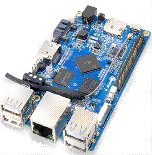
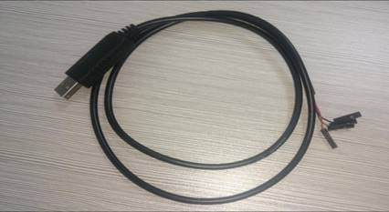
TTL 转 USB 线，不推荐PL2303。山寨的多，驱动容易导致蓝屏等。。。
Windows平台
在使用 OrangePi 做项目开发过程中，为了获得更多的调试信息，OrangePi 默认支 持串口信息调试。对于开发者而言，只需准备上面提到的材料，即可简单的获得串 口调试信息。不同的上位机使用的串口调试工具大同小异，基本可以参考下文的方 法进行部署。使用 Windows 平台进行串口调试的工具很多，通常使用的工具是 putty。本节以 putty 作为例子进行部署讲解。
1.Windows 下 USB 驱动安装
a.目前最新版的驱动PL2303_Prolific_DriverInstaller_v130.zip，下载解压。
b. 以管理员身份选择应用程序安装
c.等待安装完成
2.Windows 下 Putty 安装
a.下载 putty 安装包
b. 解压安装
c. 安装好之后打开程序如下图所示
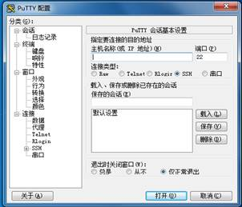
3.调试的连接方式
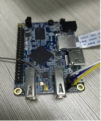
板子上有丝印标识那三根独立的针脚的定义，看不清楚的去看对应板子的章节。。目前我只写了ZERO的。。日后其他的补上。
| 板子 | USB转TTL |
|---|---|
| GND | GND |
| RX | TX |
| TX | RX |
使用 TTL 转串口线，一端连接 OrangePi，另一端连接 PC，不用连VCC，电平3.3V，按照上面表格连接，至于为何要TXRX对调，因为这边说话（TX）那边要用脑子。。哦不。。耳朵（RX）去听。。
- 设备信息的获取
a. 开始菜单 选择控制面板
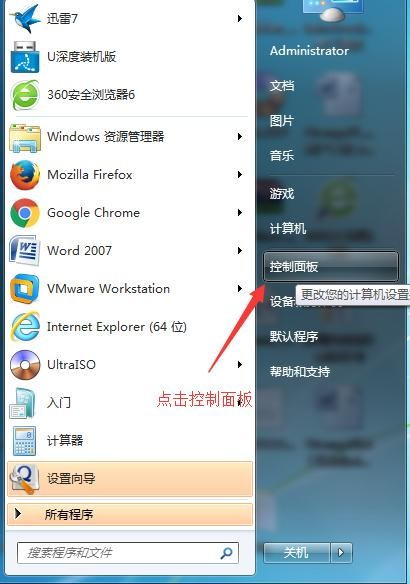
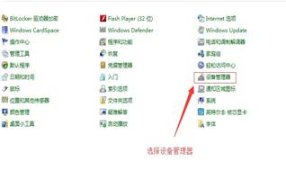
b. 点击设备管理器，查看端口号
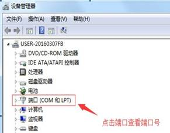
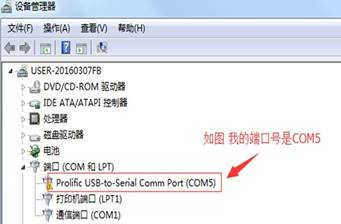
注：PL2303驱动出毛病了。。。所以才说不推荐PL2303。山寨的多，驱动容易导致蓝屏等。。。
5.Putty 的配置
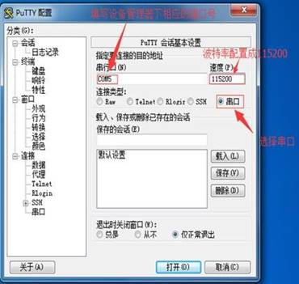
串行口设置成相应的端口号(COM5)，速度设置成 115200
6.开始调试串口
OrangePi上电开机，串口自动打印串口log
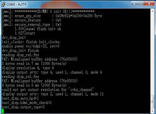
Linux平台
使用Linux平台进行串口调试工具有picocom、minicom和kermit。本文以kermit和picocom作为例子进行讲解。
picocom
1. 安装picocom
sudo apt-get install picocom
2.设备信息的获取
ls /dev/ttyUSB*
(在 PC 终端输入命令，查询 TTL 转串口 线的设备号)
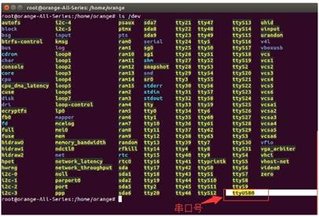
可以看到是ttyUSB0，记下来。
3.终端执行如下命令进行连接
sudo picocom -b 115200 /dev/ttyUSB0
其中-b 115200适用于OPI H3/H5/A64 至于RDA平台的2G-IOT和i96，目前是921600
Kermit
1.Kermit 的安装
a.使用命令进行安装：
sudo apt-get install ckermit
b.配置kermit
sudo vi /etc/kermit/kermrc
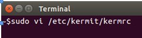
c.添加行：
set line /dev/ttyUSB1
set speed115200 set carrier-watch off
set handshake none set flow-control none
robust
set file type bin
set file name lit
set rec pack 1000
set send pack 1000
set window 5
c
其中speed115200适用于OPI H3/H5/A64 至于RDA平台的2G-IOT和i96，目前是921600
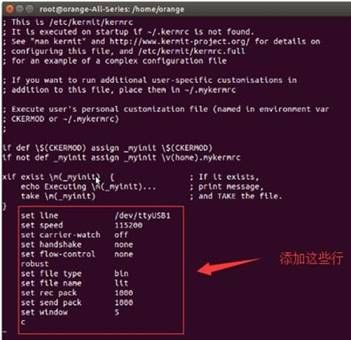
2.调试的连接方式
板子上有丝印标识那三根独立的针脚的定义，看不清楚的去看对应板子的章节。。目前我只写了ZERO的。。日后其他的补上。
| 板子 | USB转TTL |
|---|---|
| GND | GND |
| RX | TX |
| TX | RX |
使用 TTL 转串口线，一端连接 OrangePi，另一端连接 PC，按照上面表格连接，不用连VCC，电平3.3V，至于为何要TXRX对调，因为这边说话（TX）那边要用脑子。。哦不。。耳朵（RX）去听。。
3.设备信息的获取
ls /dev/ttyUSB*
(在 PC 终端输入命令，查询 TTL 转串口 线的设备号)
a.从图中可以看出，“TTL转串口”线被识别为“ttyUSB0”,配置
/ect/kermit/kermitc文件，更新串口信息。
sudo vi /etc/kermit/kermitc
b.将setline的值设置为/dev/ttyUSB0
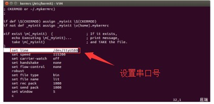
4.开始调试串口
a.在上位机终端输入命令，进入kermit模式：
sudo kermit –c
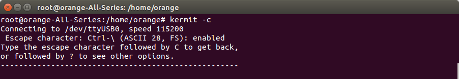
b. OrangePi上电开机，串口自动打印串口log。
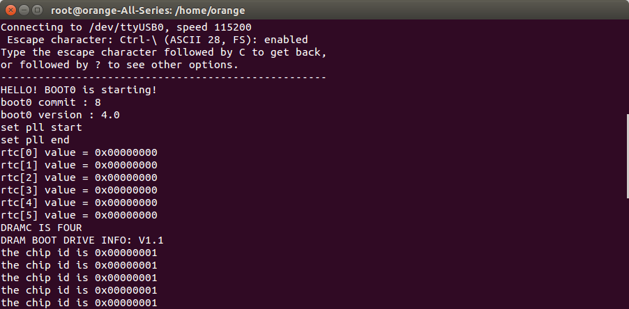
然后后面等开机完毕就可以登陆系统进行控制/调试了。。。不说了。。我的PL2303的驱动还没搞好。。。WIndows蓝屏几回了。。真心不推荐PL2303的USB转TTL。